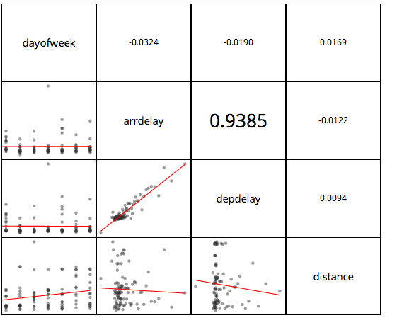

1. Overview
In the set of activities described in this document we are going to explore a subset of Alpine’s rich feature set. We will use Alpine to explore a moderately large data set using descriptive statistics. Then we will create two different prediction models for this data set, using a question with a yes/no outcome. We will then evaluate these prediction models and compare them using a graph called an ROC.
The data set consists of details on airline arrivals and departures at Chicago’s O’Hare International Airport in the year 2008. We will use this data set to create a predictive model one using Naive Bayes and another using Logistic Regression to predict the probability of a flight being delayed or alternately to answer the question "Will this flight be delayed?"
Before we set about this task we need to be able to reliably execute certain elementary atomic tasks that will be needed repeatedly. These tasks are identified in Appendix A. Please make sure you are familiar with these operations especially Alpine account name, password, and datasource properties for the datasource you will use.
2. Data Exploration
In this stage we will import our data into an Alpine DataSource. Then we will do an initial exploration and simple cleanup of the data in preparation for modeling. This stage will introduce us to some of the visualization capabilities of Alpine. We will set up a flow with multiple visualizations incrementally, one module at a time. When we are done we should have a flow in our workspace that looks like this.
Figure 1. Data Exploration
We start by creating a Data Source.
2.1. Import data from csv file
-
You should have with you a csv file called 2008_ORD.csv or a zipped version of this file.
-
Expand the zip file if necessary.
-
Create an Alpine Data Source by importing this file (see Appendix A Elementary Tasks)
-
Once you are done you should be able to see a data source called ORD_2008 under ConnectionDemo.
2.2. Summary Statistics
Once we have created a Data Source we will use it to do a sanity check of the data. Almost always the very first thing we do is to run Summary Statistics on the data. The Summary Statistics module in Alpine does an inventory and sanity check of the data provided by the Data Source. It then produces a tabular report with the results of its efforts.
We will use the Summary Statistics module operating on data from the Data Source.
Create a flow with the following schematic (see Appendix B for schematic syntax)
ORD 2008 |------> Summary Statistics
Note that this requires you to drag and drop the modules for the two end points onto the workspace first and then make a connection between them as per the schematic. Henceforth use the schematic for brevity and show the state of the full flow only at a few intermediate checkpoints.
Now we will need to run the flow.
For this click on the "RUN" item on the top right of the menu bar.
Now you will see status messages at the bottom in a console.
Once the messages show that the flow has completed running,
click on the Summary Statistics module icon in the flow.
You will see the results that look similar to the following
2.3. Null Value Replacement
The output of the Summary Statistics run output will tell us how many null values there were and where. We need to replace null values with some concrete value such as 0 for numeric columns and '' for character columns. The Null Value Replacement module does this en masse over the whole Data Source.
We add a segment to our existing flow. The new segment has the following schematic
ORD 2008 |------> Null Value Replacement
Double click on the Null Value Replacement module and see a dialog box for configuration. We set the values in the dialog as follows
Now we run the flow again and when the flow has completed the values will have been replaced.
We are now ready to do some exploratory visualization.
2.3.1. Step run vs Run
When running complicated flows with large data, it is time effective to run each step of the flow separately once we know that the previous steps have been successful. Otherwise all the previous steps will be run redundantly and with large data sets this will be wasteful of resources.
To run a single module in the flow (assuming all the previous inputs have been computed and are ready) alt-click on the module and pick the "Step run" option.
2.4. Box plot
We now explore arrival delay on different days of the week and their distribution using the Box Plot module.
Add the following segment to the flow
ORD 2008 |------> Box Plot
Set the Box Plot configuration by double-clicking on the Box Plot module.
Step run the Box Plot module. You will see a result similar to the following.
2.5. Scatterplot matrix
We want to explore correlations between variables to see which ones we might use in our predictive model.
Add the following segment to the flow.
ORD 2008 |------> Scatter Plot Matrix
Set the Scatter Plot Matrix configuration as follows
Double click on the Scatter Plot Matrix module icon and select the following columns,
dayofweek, arrdelay, depdelay, distance.
Then save.
Now step run the Scatter Plot Matrix module. This may take a while. Look at the console messages to tell you when you will be done.
When done you should see a diagram similar to this.

To be able to see the diagram fully, click on the arrow at the far right of the console menu. This is an arrow pointing up and to the right and on clicking will expand the window to give you a full view of the Scatter Plot Matrix.
This tells us that depdelay and arrdelay are strongly correlated, i.e. if the plane took off late it is mostl likely to arrive late at the next destination. This is insightful but we don’t need data science to tell us this. However this is a very useful training exercise so we continue using this correlation for the predictive model. In reality we would want to predict the delay long before the flight took off late from the previous destination.
3. Model Creation
In this phase we will create our two differnt predictive models and in the next phase we will evaluate them. As usual we will create our flow incrementally and Step Run each new module. Each segment will be created according to a schematic for that segment.
At the end of this phase the full flow should look like
3.1. Variable Creation
Schematic for flow.
Null Value Replacement |-----> Variable
3.2. Random Sampling
Now we create two data sets by random sampling from original data. We want to use one as training set to create our model and the other as a validation set to see how good our model turned out.
Schematic for flow.
Variable |-----> Random Sampling
Configuration

3.3. Training
Schematic for flow.
Random Sampling |-----> Training
3.4. Validation
Schematic for flow.
Random Sampling |-----> Validation
3.5. Logistic Regression
Schematic for flow.
Training |-----> Logistic Regression
Configuration.
3.6. Naive Bayes
Schematic for flow.
Training |-----> Naive Bayes
Configuration.
4. Model Evaluation
4.1. ROC
Schematic for flow.
Logistic Regression |-----> ROC
Naive Bayes |-----> ROC
Validation |-----> ROC
4.2. LogReg Predictor
Schematic for flow.
Logistic Regression |-----> LogReg Predictor
Variable |-----> LogReg Predictor
5. Iterating on the Model
5.1. Overview
Here we follow the steps in the Model Creation exercise but use more realistic predictors.
|
Note
|
Need more specifics now that we have the rest pretty much covered |
6. Appendix A Elementary Tasks
-
Log in to Alpine
-
Create a connection
-
Create a Flow
-
Set properties on a module
-
Create a Data source by importing from a CSV file
|
Note
|
Figure with properties dialog for Import File |
-
Join two data sources
-
Run a flow
7. Appendix B (Schematic syntax)
-
A Flow Segment
SourceModuleName |---> TargetModuleName e.g. ORD2008 |---> Summary Statistics
-
The corresponding flow in the workspace